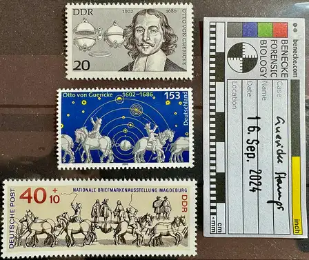
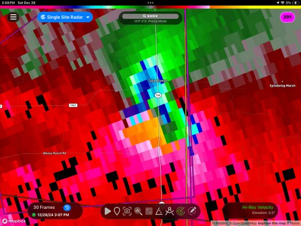
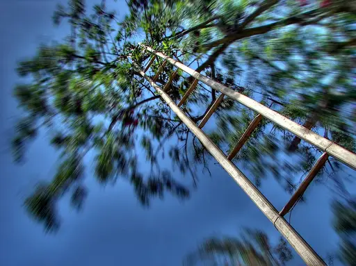
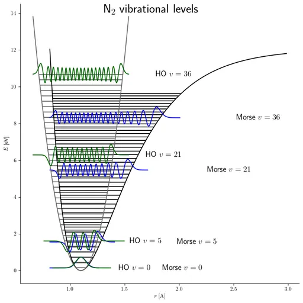
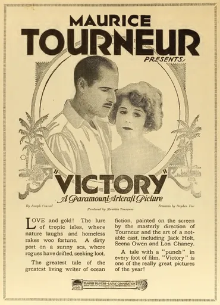
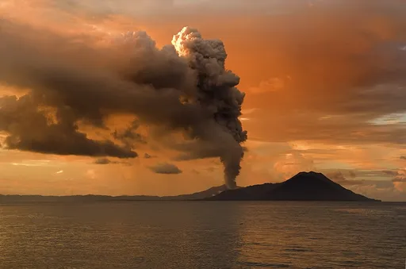

Reject an image by adding its slug to public/charades/charades-hard/reject.txt (append ! to keep it word-only), then re-run node scripts/genimages.mjs.

Vacuum vacuum CC BY-SA 4.0 · Markbenecke · sourceVanity vanity Public domain · Distributed by Warner Bros. · source

Velocity velocity Public domain · National Weather Service Doppler Radar · source

Vertigo vertigo CC BY-SA 3.0 · Nevit Dilmen · source

Vibration vibration CC BY-SA 4.0 · Chengouze · source

Victory victory Public domain · Paramount Pictures · source

Volcano volcano CC BY 2.0 · Taro Taylor edit by Richard Bartz · source